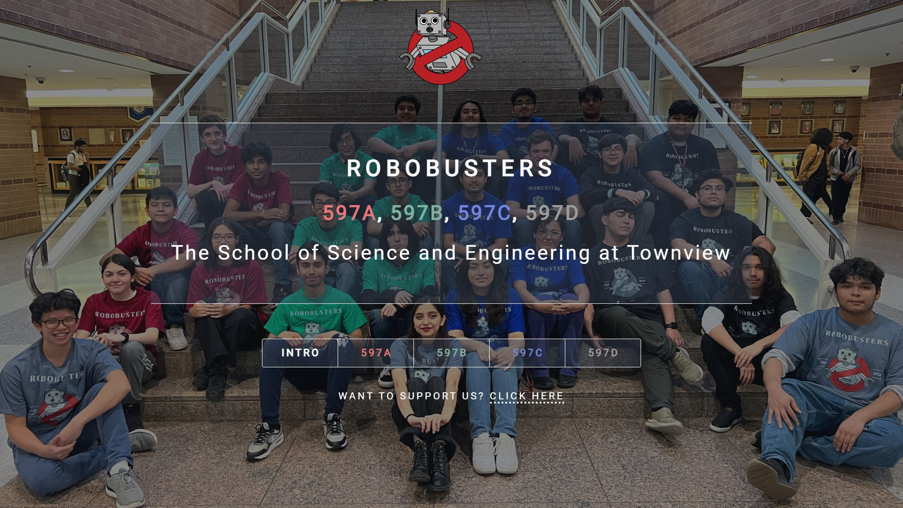
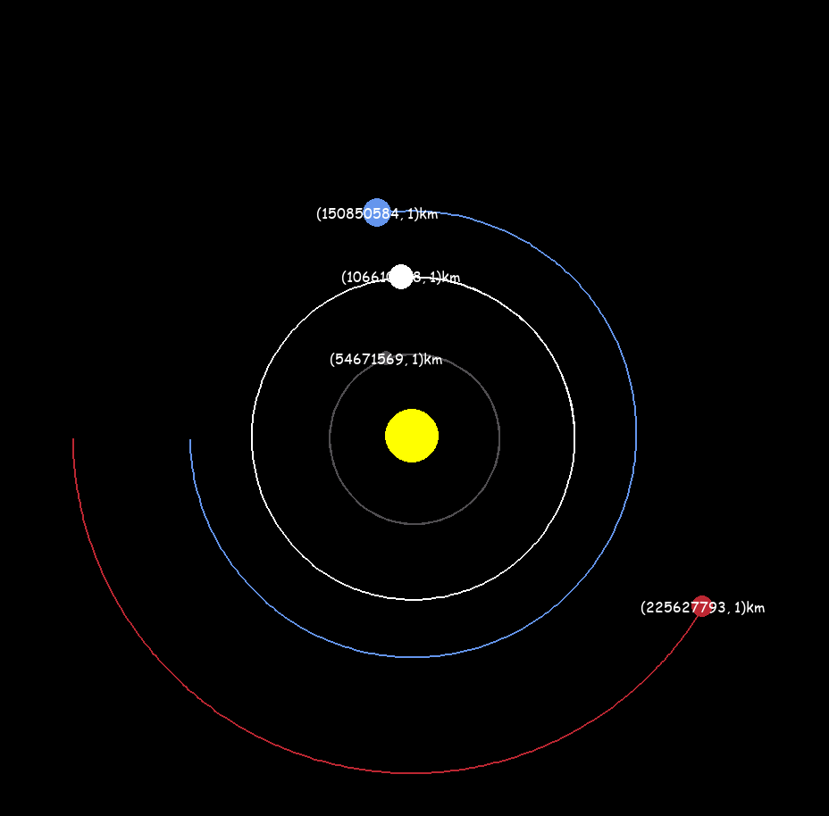
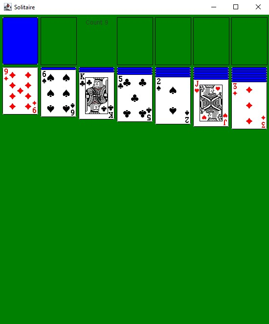
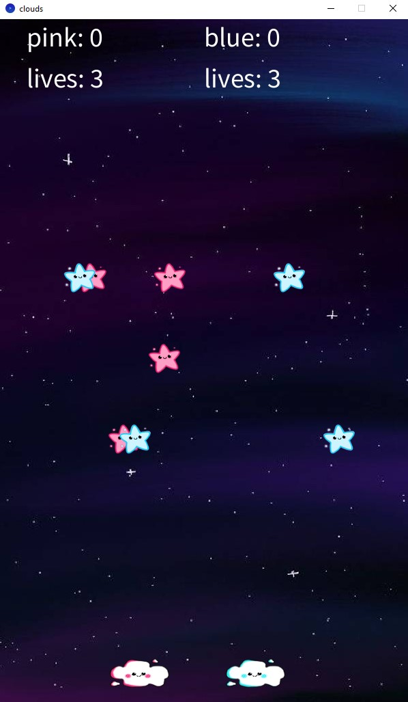
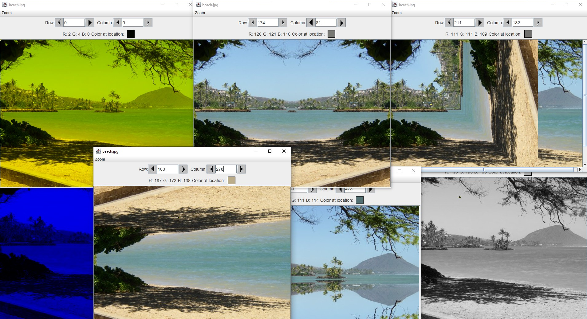
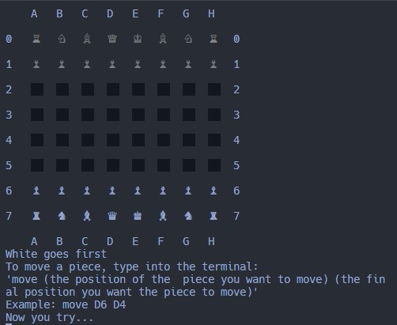
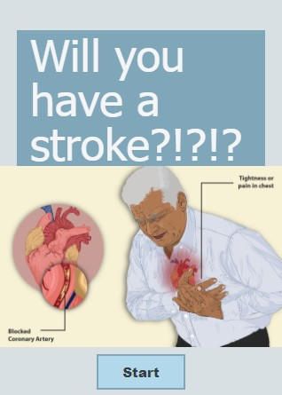
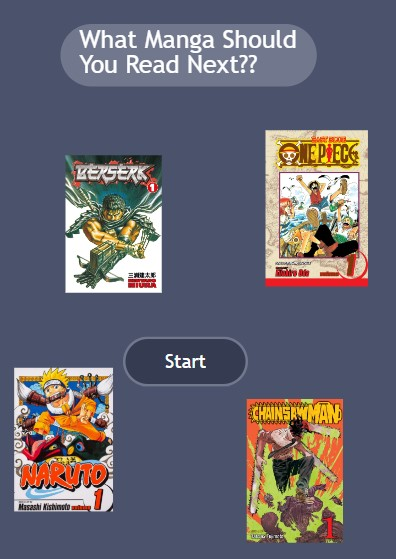
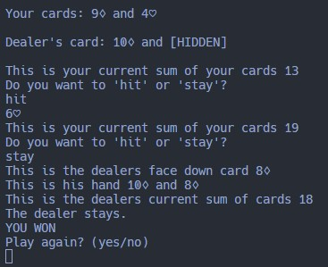
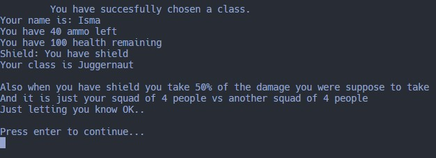

Created my first ever website using the Dimensions template by @ajlkn for my robotics club.
Languages used: HTML, CSS, and JavaScript
Time Spent: ~12 hours
Started: 12th grade

Programmed my first Python project using physics to create a simplified view of the solar system.
Languages used: Python
Time Spent: ~2 hours
Started: 12th grade

Created a solitaire game to learn how the stacks data structure works.
Languages used: Java
Time Spent: ~6 hours
Started: 12th grade

Created a vigeo game using the Processing IDE at The University of Texas at Austin
Languages used: Java
Time Spent: ~15 hours
Started: 11th grade summer

Created functions that would allow me to manipulate pixels using 2D arrays
Languages used: Java
Time Spent: ~9 hours
Started: 11th grade

Created chess to learn how inheritance and polymorphism works.
Languages used: Java
Time Spent: ~10 hours
Started: 11th grade

Created a app that uses AI to predict wheter or not the user is at risk of a stroke.
Languages used: JavaScript
Time Spent: ~6 hours
Started: 10th grade

Created an app that gives book recommendations, of my favorite books, based on a short user survey.
Languages used: JavaScript
Time Spent: ~3 hours
Started: 10th grade

Created a deck of cards that I then used to create the blackjack.
Languages used: Java
Time Spent: ~12 hours
Started: 9th grade

Created a text-based game
Languages used: Java
Time Spent: ~15 hours
Started: 9th grade
I was really eager to learn Python because of its powerful capabilities. I watched videos discussing its potential and what it can accomplish. To start learning Python, I embarked on a project involving basic astrophysics and utilized a Python library called Pygame. Here, I learned the very basics of the language and was able to visualize the solar system clearly using the principles of physics.
In high school, I took a data structures class, and one of the ways that the teacher taught us stacks, a first-in-last-out data structure, was by creating a solitaire game. We used JavaFX to create the GUI and Java to create the game's logic.
During my time at the UT Austin Computer Science Academy for All – Game Development, I was taught how to use Processing to create a game in a week. My team and I created a co-op multiplayer game where the players had to play against each other. The one who collected the ten stars won, but the players also had three lives. If they were to catch a star of the opposite color of their cloud, they would lose a life. If they hit zero lives, the other player would win instantly. We also had a shooting star, which counted as double the points of a regular star.
Utilizing 2D arrays and pixel manipulation, I was able to create methods that manipulated digital pictures. Some of them included stuff like mirroring a picture diagonally or horizontally, changing the hue of the picture to be able to see fishes underwater, and copying a seagull to make it seem like there were two of them when there was actually only one.
One of the ways that I began to understand inheritance and polymorphism was by creating a chess game. The logic behind this game required quite a bit of math to be able to get a consistent game experience. Ultimately, I was not able to completely finish the entire game in the allotted time that we were given but it was a very good learning experience as it taught me just how complex some “simple” things can be. I plan on creating a complete chess game from scratch just because of the challenge it gave me a few years ago.
Utilizing the Stroke Prediction Dataset from Kaggle by Fedesoriano, I was able to create an app that used AI to predict whether the user is vulnerable to having a stroke. This was the first time that I had ever used AI in a project before and it was such an amazing learning experience, especially if you take into account that my teacher taught us this before the big AI boom.
Designed an app that dynamically generates a book recommendation based on user inputs. The app analyzes reading preferences and suggests titles that the user may enjoy.
Created a deck of cards class from scratch using emoticons. Then, I created a project that involved programming a console-based Blackjack game to understand object-oriented programming concepts.
Designed and programmed a storytelling game that was inspired by the first-person shooter game Warzone. The game combines narrative and player choices into a branching story.